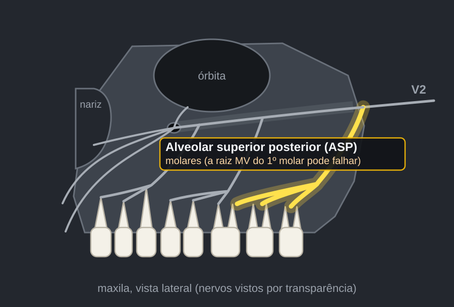
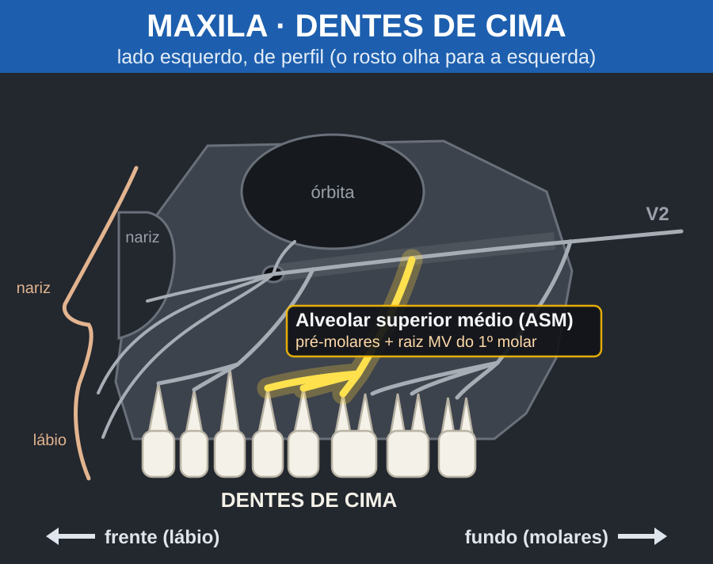
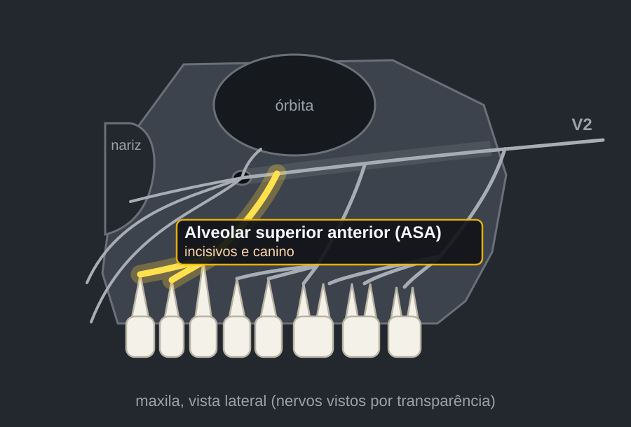
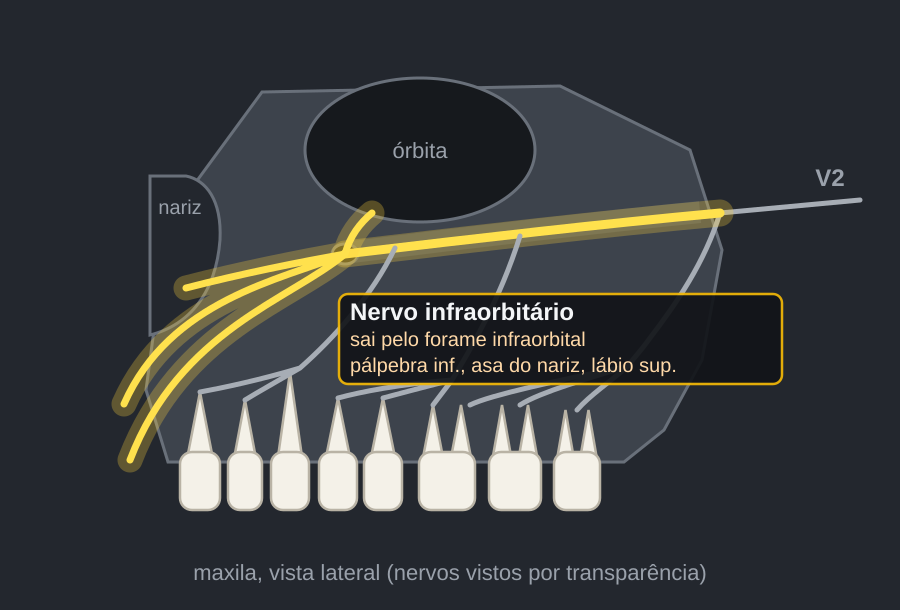
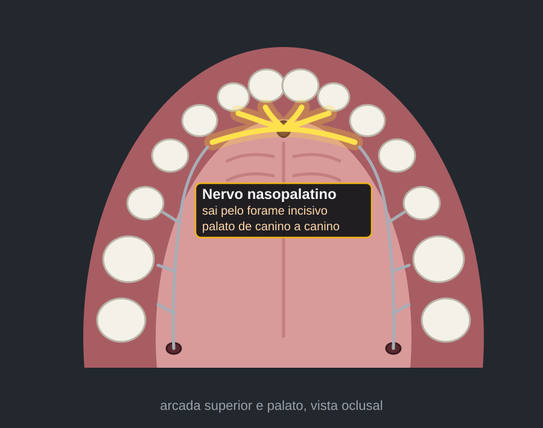
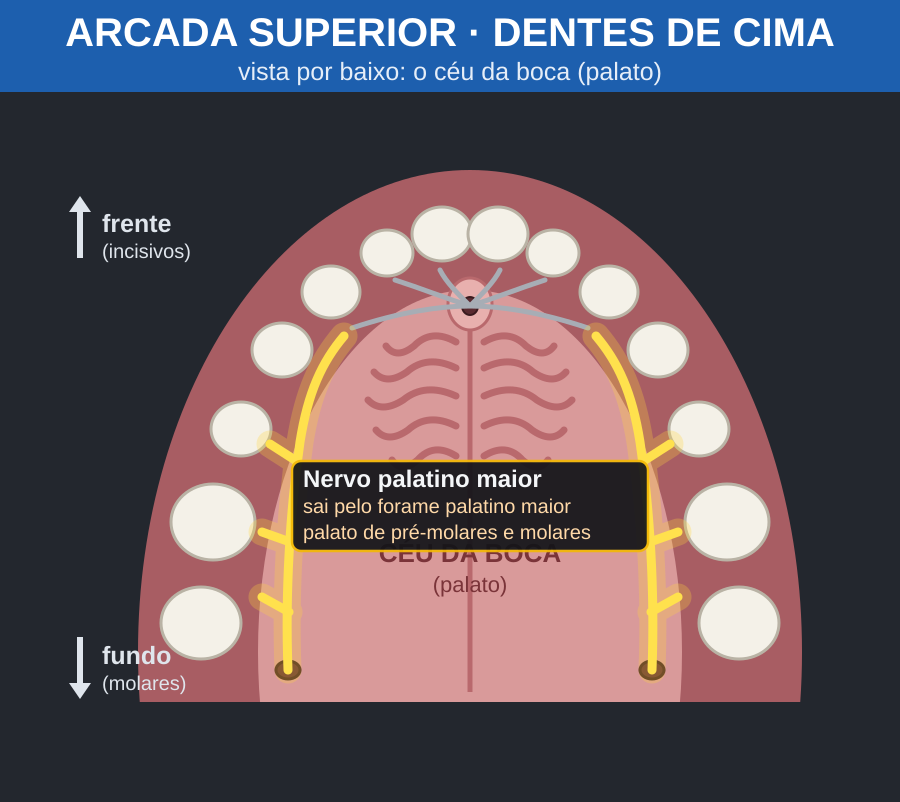
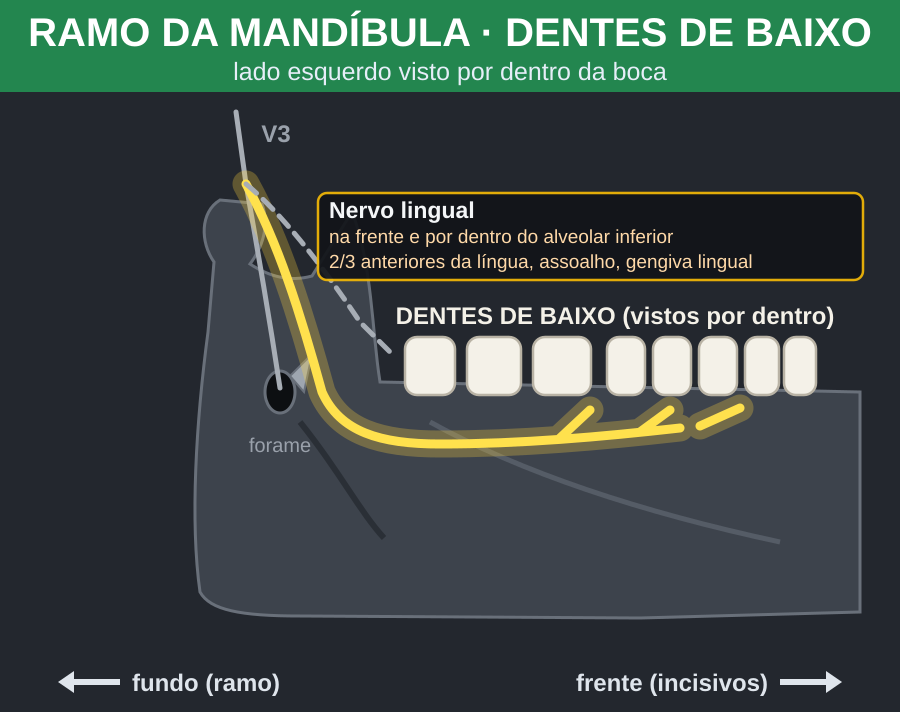
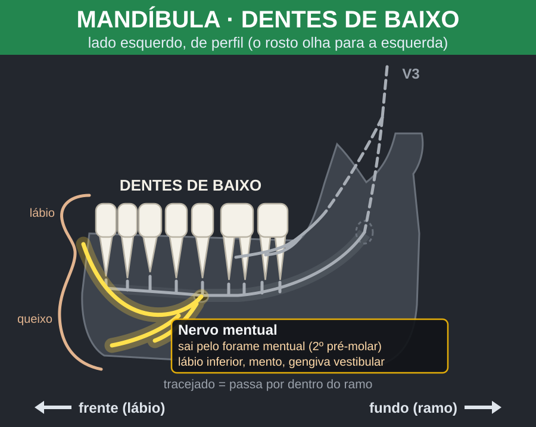
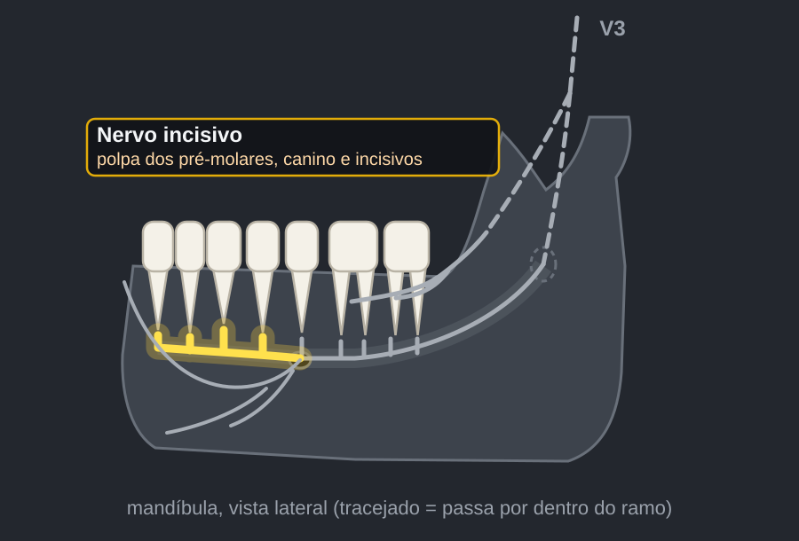

Resumo completo de Farmaco
Prof. Gustavo Holderbaum · AV quinta 26/11 · feito com as aulas, o SM1 e o SM2
- 1 Farmacocinética
- 2 SNA
- 3 Anestésicos
- 4 Vasoconstritores
- 5 Dose máxima
- 6 Maxila
- 7 Mandíbula
- 8 Especiais
- 9 Complicações
- 10 Analgésicos
- 11 Antibióticos
- 12 Corticoides e BZD
- 13 Prescrição
- 14 V ou F
- 15 Pra decorar
1Farmacocinética e farmacodinâmica
| Campo | Frase da aula | O que estuda |
|---|---|---|
| Farmacocinética | O que o corpo faz com o fármaco | ADME, vias de administração, posologia |
| Farmacodinâmica | O que o fármaco faz no corpo | Mecanismo de ação, receptores, dose-resposta, efeitos desejados e adversos |
ADME
| Letra | Etapa | O que é |
|---|---|---|
| A | Absorção | Entrada até o sangue. Depende da via (oral, intramuscular...) |
| D | Distribuição | Transporte pela circulação até os tecidos e órgãos-alvo |
| M | Metabolismo | Biotransformação, principalmente no fígado, pra facilitar a eliminação |
| E | Excreção | Eliminação, principalmente pelos rins (urina) |
Conceitos que caem
- Primeira passagem: o fígado biotransforma parte do fármaco antes de ele chegar à circulação. Consequência: chega menos fármaco inalterado. Não zera o efeito.
- Biodisponibilidade: fração que chega inalterada à circulação.
- Via endovenosa (EV): cai direto no sangue. Sem absorção, sem primeira passagem, biodisponibilidade de 100%, efeito imediato e previsível.
- Índice terapêutico: IT = dose tóxica ÷ dose eficaz. IT alto = grande margem de segurança. IT baixo (doses próximas) = pouca distância entre tratar e intoxicar.
- Tolerância (taquifilaxia): resposta que diminui com o uso repetido do fármaco.
- Dose-resposta: quanto maior a dose, maior o efeito, até um limite.
2Sistema nervoso autônomo
Receptores adrenérgicos
| Receptor | Onde | Efeito |
|---|---|---|
| Alfa-1 | Músculo liso dos vasos | Vasoconstrição (a mucosa empalidece). É por ele que a epinefrina do tubete age |
| Beta-1 | Coração | Acelera o coração: daí a taquicardia quando a epinefrina cai na circulação |
| Beta-2 | Músculo esquelético, brônquios | Vasodilatação e broncodilatação |
A felipressina não é adrenérgica: o receptor dela é o V1.
Saliva
| Divisão | Saliva |
|---|---|
| Parassimpático | Aquosa e abundante |
| Simpático (luta e fuga, ansiedade) | Viscosa e rica em proteínas |
Remédios que mexem na saliva
- Atropina: bloqueia o receptor muscarínico = menos saliva. Por isso remédio com efeito anticolinérgico deixa a boca seca.
- Pilocarpina: agonista direto = mais saliva.
- Anticolinesterásicos (ex.: neostigmina): aumentam a acetilcolina porque impedem a degradação dela.
3Anestésicos locais
Anestesia local = interrupção reversível da condução do impulso nervoso numa região, sem perda de consciência. Age nos nervos periféricos.
Mecanismo: bloqueia os canais de sódio voltagem-dependentes. Sem sódio entrando, não há despolarização e o impulso da dor não passa.
A molécula
| Parte | O que faz |
|---|---|
| Grupo aromático | Lipofílico: atravessa a membrana do nervo |
| Cadeia intermediária | Define se é éster ou amida |
| Amina terminal | Hidrofílica: solubilidade em água |
Éster x amida
| Tipo | Exemplos | O que lembrar |
|---|---|---|
| Éster | Procaína (e a cocaína, histórica) | Mais alergênico, pouco usado hoje |
| Amida | Lidocaína, articaína, mepivacaína, prilocaína, bupivacaína | As mais usadas, melhor perfil de segurança. Metabolismo no fígado (a articaína também é quebrada no plasma) |
História na ordem da aula: óxido nitroso (século XIX), cocaína (muitos efeitos colaterais), procaína e depois as amidas.
Base fraca e pH: por que falha no abscesso
O anestésico é uma base fraca. No pH ácido da inflamação sobra mais forma ionizada (com carga), que não atravessa a membrana. Pouca base livre entra no nervo e o bloqueio falha. Aumentar a dose ali não resolve: o caminho é anestesiar longe do foco (bloqueio regional) ou tratar a inflamação.
Cada anestésico
| Anestésico | Marca registrada |
|---|---|
| Lidocaína 2% | A referência. 36 mg por tubete |
| Articaína 4% | Amida com anel tiofeno e um grupo éster extra. 72 mg por tubete. O grupo éster é quebrado no plasma (meia-vida curta) |
| Mepivacaína | Amida. A 3%, 54 mg por tubete |
| Prilocaína | Amida. A 3% vai com felipressina. Dose alta = metemoglobinemia |
| Bupivacaína 0,5% | Longa duração e alta potência. Início mais lento. Cirurgias longas e dor pós-operatória |
| Procaína | Éster, mais alergênico |
Metemoglobinemia
A prilocaína em dose alta gera orto-toluidina, que oxida o ferro da hemoglobina: ela vira metemoglobina e não carrega oxigênio. Sinal: lábios e unhas arroxeados (cianose) com pulmão normal. Risco maior em quem já tem metemoglobinemia, anemia ou problema respiratório. Tratamento: azul de metileno intravenoso.
4Vasoconstritores
Pra que servem
Fecham os vasos do local. Resultado:
- Absorção mais lenta do anestésico pro sangue
- Menos toxicidade sistêmica
- Anestesia mais longa e mais profunda
- Menos sangramento (hemostasia)
O vasoconstritor não acelera o metabolismo hepático e não aumenta a potência do sal.
Epinefrina x felipressina
| Epinefrina | Felipressina | |
|---|---|---|
| Receptor | Adrenérgico (alfa-1) | V1 (não é adrenérgica) |
| Sangramento | Melhor pra controlar | Age mais no lado venoso: hemostasia pobre |
| Vai com | Ex.: lidocaína 2% com epinefrina 1:100.000 | Prilocaína 3% |
| Cuidado | No vaso dá taquicardia | Ação ocitócica (contração uterina): evitada em gestante |
Paciente especial
| Paciente | Conduta |
|---|---|
| Cardiopata controlado | Pode, com dose criteriosa: até 0,04 mg de epinefrina (2 tubetes a 1:100.000), aspiração e injeção lenta |
| Hipertenso controlado | Pode, com dose reduzida, aspiração e injeção lenta |
| Pressão ≥ 180 x 110 mmHg | Não controlada: adiar o eletivo e encaminhar ao médico. Trocar o vasoconstritor não resolve |
| Diabético controlado (com ou sem insulina) | Pode receber epinefrina, respeitando a dose máxima, com aspiração negativa e injeção lenta |
No cardiopata ansioso: dor e estresse liberam muito mais catecolamina do próprio corpo que um tubete. Anestesia eficaz também protege o coração.
5Dose máxima: a conta que sempre cai
Tubete = 1,8 mL. Concentração em % x 10 = mg/mL. mg/mL x 1,8 = mg por tubete. Dose máxima = peso x mg/kg. Arredonda sempre pra baixo.
mg por tubete
| Solução | Conta | Por tubete |
|---|---|---|
| Lidocaína 2% | 20 mg/mL x 1,8 | 36 mg |
| Mepivacaína ou prilocaína 3% | 30 mg/mL x 1,8 | 54 mg |
| Articaína 4% | 40 mg/mL x 1,8 | 72 mg |
| Epinefrina 1:100.000 | 0,01 mg/mL x 1,8 | 0,018 mg |
| Epinefrina 1:200.000 | 0,005 mg/mL x 1,8 | 0,009 mg |
Limites usados no banco
| Substância | Limite |
|---|---|
| Lidocaína | 4,4 mg/kg, teto absoluto 300 mg |
| Articaína | 7 mg/kg, teto absoluto 500 mg |
| Epinefrina, saudável | 0,2 mg |
| Epinefrina, cardiopata | 0,04 mg |
Os exemplos que caem
| Caso | Conta | Resultado |
|---|---|---|
| Lidocaína 2%, adulto de 60 kg | 60 x 4,4 = 264 mg ÷ 36 = 7,3 | 7 tubetes |
| Epinefrina 1:100.000, saudável | 0,2 ÷ 0,018 | 11 tubetes |
| Epinefrina 1:100.000, cardiopata | 0,04 ÷ 0,018 = 2,2 | 2 tubetes |
| Epinefrina 1:200.000, cardiopata | 0,04 ÷ 0,009 = 4,4 | 4 tubetes |
| Articaína 4%, criança de 20 kg | 20 x 7 = 140 mg ÷ 72 | 1,9 tubete (menos de 2) |
Paciente de 60 kg saudável com lidocaína 2% e epinefrina 1:100.000: lidocaína dá 7, epinefrina dá 11. Vale o menor: 7, e quem limita é a lidocaína.
6Técnicas na maxila
A maxila é osso poroso: a solução difunde bem, por isso a infiltração funciona. A infiltração supraperiosteal é a mais usada: vestibular, junto ao ápice, agulha curta, penetração de 2 a 3 mm, depósito lento de 0,6 a 1,0 mL. Pega o dente, o osso alveolar ao lado e o tecido mole vestibular.
| Técnica | Onde pica | Volume | O que anestesia |
|---|---|---|---|
| Alveolar sup. posterior (ASP/PSA) | Vestibular acima do 2º molar; para trás, para cima e para dentro, 45°. Agulha curta 27 ou 30 | 0,9 a 1,2 mL | Molares superiores (às vezes não a raiz MV do 1º molar) |
| Alveolar sup. médio (ASM) | Fundo de vestíbulo do 2º pré-molar | 0,9 a 1,2 mL | Pré-molares + raiz MV do 1º molar |
| Alveolar sup. anterior (ASA) | Fossa canina, fundo de vestíbulo. Agulha curta 30 | 0,9 mL | Incisivos e canino |
| Infraorbitário (ASA + ASM) | Vestíbulo sobre o 1º pré-molar, em linha reta até o forame palpado | 0,9 a 1,2 mL | Incisivos a pré-molares + lábio superior, asa do nariz, pálpebra inferior |
| Nasopalatino | Papila incisiva, devagar (dói) | 0,2 a 0,3 mL | Palato de canino a canino |
| Palatino maior | Perto do forame palatino maior | 0,25 a 0,5 mL | Palato de pré-molares e molares (só do lado da picada) |






Na criança, pro molar decíduo superior (ex.: o 55), a infiltrativa vestibular costuma bastar, porque a maxila infantil é ainda mais porosa.
7Técnicas na mandíbula
A mandíbula tem osso denso: a infiltração funciona mal, então o bloqueio é a regra.
Bloqueio do alveolar inferior (convencional)
- Boca bem aberta. Operador do lado oposto (posição 8h/9h).
- Ponto: triângulo retromolar, 6 a 10 mm acima do plano oclusal, entre o ramo e a linha oblíqua interna.
- Referência: a língula (espinha de Spix), na face medial do ramo, que protege o forame mandibular.
- Agulha longa até o contato ósseo (cerca de 20 a 25 mm). Recua 1 mm, aspira e injeta 1,0 a 1,5 mL devagar.
- Anestesia todos os dentes do lado e os tecidos moles do hemiarco, exceto a vestibular dos molares.
- Sem contato ósseo: não forçar (risco de injetar no pterigóideo medial).
| Técnica | Como | Volume | O que anestesia |
|---|---|---|---|
| Lingual | No recuo da agulha do alveolar inferior (recuar 1 cm) | 0,3 mL | 2/3 anteriores da língua, assoalho, gengiva lingual |
| Bucal | Agulha curta na mucosa distal e vestibular ao último molar, boca parcialmente aberta | 0,3 a 0,5 mL | Mucosa e gengiva vestibular dos molares inferiores |
| Mentual / incisivo | Fundo de vestíbulo, rumo ao forame mentual (2º pré-molar) | 0,6 a 0,8 mL | Lábio inferior e mento; com pressão do dedo no forame, a polpa de pré-molares a incisivos |
As duas alternativas
| Gow-Gates | Vazirani-Akinosi | |
|---|---|---|
| Boca | Bem ABERTA | FECHADA (dentes ocluídos) |
| Alvo | Colo do côndilo. Punção distal ao 2º molar superior, na altura da cúspide mesiopalatina | Espaço pterigomandibular. Agulha paralela ao plano oclusal, na altura do rebordo alveolar superior |
| Profundidade | 25 a 30 mm | 25 mm |
| Volume | 1,8 mL (manter a boca aberta 1 a 2 min) | 1,5 a 1,8 mL |
| Quando | Convencional falhou. Pega alveolar inferior, lingual, bucal, auriculotemporal e milo-hióideo, com menos aspiração positiva | Limitação de abertura (trismo) |




Anatomia junto: o trigêmeo se divide em V1 oftálmico (fissura orbital superior), V2 maxilar (forame redondo, só sensitivo) e V3 mandibular (forame oval). O V3 é o único misto: leva a parte motora dos músculos da mastigação.
8Técnicas especiais
| Técnica | Onde | Volume | Marca registrada |
|---|---|---|---|
| Tópica | Mucosa, sem punção | Sem agulha | Bloqueio superficial, baixa penetração, ação curta. Locais: mucosa jugal, palato, papilas, assoalho |
| Intrapapilar | Papila interdental | 0,2 mL | Periodontia e estética |
| Intraligamentar (PDL) | Sulco gengival, sob pressão | 0,2 mL por raiz | Anestesia unitária |
| Intrasseptal | Osso interproximal | 0,2 a 0,4 mL | Cirurgia periodontal |
| Intraóssea | Perfuração prévia do osso | - | Latência imediata. Risco de taquicardia (vasoconstritor cai rápido na circulação) |
| Intrapulpar | Polpa exposta | Volume mínimo | Extremamente dolorosa, mas eficaz. Raramente indicada na rotina |
Técnicas complementares da aula: sedação consciente com óxido nitroso (paciente acordado e colaborativo) e sedação com benzodiazepínicos (midazolam, diazepam), com monitoramento.
9Complicações
| Complicação | Causa | Detalhe e conduta |
|---|---|---|
| Hematoma | Lesão de vaso. No PSA, agulha profunda demais fura o plexo venoso pterigóideo (o PSA é a técnica que mais causa) | Compressão firme, gelo nas primeiras horas, orientar o paciente |
| Trismo | Trauma nos músculos da mastigação (pterigóideo medial, masseter) por punções repetidas ou hematoma | Limitação pra abrir a boca, aparece dias depois |
| Paralisia facial transitória | Agulha passou da borda do ramo, a solução foi pra parótida e pegou o nervo facial | Tranquilizar e proteger o olho até passar. Não é AVC |
| Parestesia | Dormência que persiste. O nervo mais atingido é o lingual (também o alveolar inferior) | - |
| Aspiração positiva | A ponta da agulha está dentro de um vaso | Reposicionar, aspirar de novo e só injetar com aspiração negativa. Tubete muito tingido de sangue = trocar |
| Falha anestésica | Localização incorreta | - |
Associação que caiu: parótida = paralisia facial; plexo pterigóideo = hematoma do PSA; nervo lingual = parestesia da língua; pterigóideo medial = trismo.
10Anti-inflamatórios e analgésicos
| Inibe | Exemplos | Risco |
|---|---|---|
| COX-1 e COX-2 (não seletivo) | Ibuprofeno, diclofenaco | Estômago (perde a proteção da mucosa) e sangramento |
| Só COX-2 (seletivo) | Coxibes (celecoxibe) | Poupa mais o estômago, mas tem risco cardiovascular (trombose, infarto): evitar no cardiopata |
A COX-1 faz as prostaglandinas que protegem o estômago (muco, bicarbonato, fluxo de sangue), mantêm o rim e, na plaqueta, o tromboxano. Inibir a COX-1 = gastrite, úlcera e mais sangramento.
Casos que caem
| Paciente | Escolha | Por quê |
|---|---|---|
| Usa varfarina | Dipirona 500 mg a 1 g, de 6 em 6 horas, por curto período | Efeito pequeno e reversível na plaqueta, não agride o estômago. AAS é antiagregante (a pior escolha); AINEs aumentam sangramento |
| Gestante | Paracetamol | Analgésico de escolha na gestante |
| Hipertenso ou anticoagulado, dor leve a moderada | Dipirona ou paracetamol | Se precisar de anti-inflamatório, o menor tempo possível |
Dipirona e paracetamol: boa ação analgésica e antitérmica, pouca ação anti-inflamatória. Pra edema, não substituem o anti-inflamatório.
11Antibióticos
Amoxicilina e clavulanato
Várias bactérias fazem betalactamase, enzima que quebra o anel betalactâmico e inativa a amoxicilina. O clavulanato inibe a betalactamase: protege a amoxicilina e amplia o espectro.
- Sozinho, o clavulanato quase não tem ação antibacteriana.
- Costuma aumentar a diarreia.
- Continua sendo penicilina: proibido no alérgico.
Alérgico à penicilina
Nada de amoxicilina, com ou sem clavulanato. Pra tratar infecção: clindamicina ou macrolídeos (azitromicina, claritromicina).
Antibiótico não é o tratamento
O tratamento principal é drenar e remover a causa (pulpectomia, exodontia). Antibiótico sem tratar a causa só adia o problema e favorece resistência.
Profilaxia de endocardite (AHA 2021)
| Item | Regra |
|---|---|
| Quem recebe | Só ALTO risco: endocardite prévia, prótese de válvula, algumas cardiopatias congênitas, transplantado cardíaco com valvopatia. Idade sozinha não indica |
| Quando | Procedimento que manipula gengiva, região periapical ou perfura a mucosa |
| Esquema | Amoxicilina 2 g VO (criança 50 mg/kg), dose única, 30 a 60 min antes |
| Alérgico sem anafilaxia | Cefalexina 2 g |
| Clindamicina | Saiu da profilaxia em 2021 (risco de colite por C. difficile). Continua valendo pra TRATAR infecção |
12Corticoides e benzodiazepínicos
Corticoide
- Bloqueia a fosfolipase A2 (via anexinas/lipocortinas): corta o ácido araquidônico na origem. Reduz as duas vias: COX (prostaglandinas) e lipoxigenase (leucotrienos). O AINE só bloqueia a COX.
- Dexametasona em dose única, por via oral, cerca de 1 hora antes da cirurgia (analgesia preemptiva): menos edema, trismo e dor.
- Supressão da suprarrenal é risco do uso prolongado. Dose única ou poucos dias não traz esse problema.
Benzodiazepínico
| Midazolam | Diazepam | |
|---|---|---|
| Início | Rápido, duração curta | Mais lento |
| Quando dar | 7,5 mg VO cerca de 30 min antes | Cerca de 1 hora antes |
Deixa sonolência e reflexo lento: paciente acompanhado e sem dirigir.
| Antagonista | Reverte |
|---|---|
| Flumazenil | Benzodiazepínico (sítio do receptor GABA-A) |
| Naloxona | Opioide |
13Prescrição
Receita completa
Precisa de: nome do remédio (pode ser genérico), concentração/dose, via, quantidade e posologia (de quanto em quanto tempo e por quantos dias).
"Paracetamol. Tomar quando necessário." está incompleta: falta dose e posologia. Nome comercial, cor, farmácia e fabricante não são obrigatórios.
Tipo de receita
| Remédio | Receita | Validade |
|---|---|---|
| Benzodiazepínico (lista B1, Portaria 344/98) | Azul, numerada (Notificação de Receita B) | 30 dias, só no estado |
| Antimicrobiano (RDC 20/2011) | 2 vias: a 1ª fica retida na farmácia, a 2ª volta ao paciente | 10 dias da emissão |
| Analgésico, AINE, corticoide | Receita simples | - |
Exemplo do banco: antibiótico receitado no dia 02 e levado à farmácia no dia 15 = 13 dias, venceu. Precisa de receita nova.
14Verdadeiro ou falso de revisão
| Na via endovenosa a biodisponibilidade é de 100%. | Verdadeiro |
| Farmacocinética é o que o fármaco faz no corpo. | Falso |
| IT baixo significa pouca margem de segurança. | Verdadeiro |
| O estímulo simpático produz saliva aquosa e abundante. | Falso |
| O anestésico bloqueia canais de sódio voltagem-dependentes. | Verdadeiro |
| A articaína é um anestésico do tipo éster. | Falso |
| No pH ácido do abscesso predomina a forma ionizada do anestésico. | Verdadeiro |
| A metemoglobinemia é causada pela felipressina. | Falso |
| O vasoconstritor acelera o metabolismo hepático do anestésico. | Falso |
| Diabético controlado pode receber anestésico com epinefrina. | Verdadeiro |
| Com pressão de 180 x 110 mmHg, basta trocar o vasoconstritor. | Falso |
| Um tubete de lidocaína 2% tem 36 mg. | Verdadeiro |
| O PSA usa agulha longa inserida pelo palato. | Falso |
| A Vazirani-Akinosi é feita com a boca fechada. | Verdadeiro |
| O alveolar inferior anestesia a gengiva vestibular dos molares. | Falso |
| A intraóssea tem risco de taquicardia. | Verdadeiro |
| A naloxona reverte a sedação do midazolam. | Falso |
| Amoxicilina com clavulanato pode ser dada ao alérgico à penicilina. | Falso |
| Paracetamol é o analgésico de escolha na gestante. | Verdadeiro |
| Receita de antimicrobiano vale 30 dias. | Falso |
15Pra decorar
Como o anestésico age
Em toda técnica
Dose máxima
Feito pela Mônica com o conteúdo das aulas do prof. Gustavo e dos simulados oficiais.